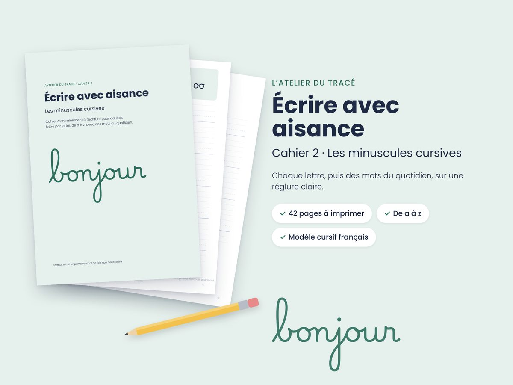
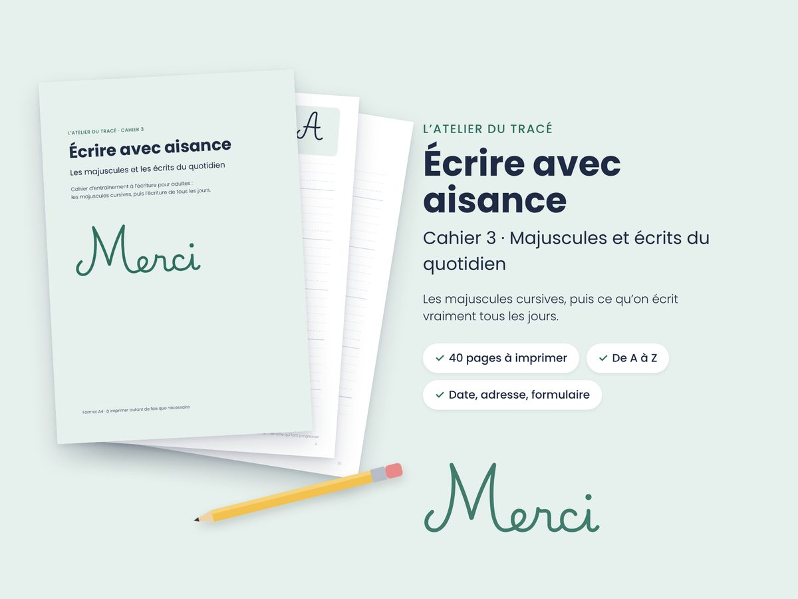
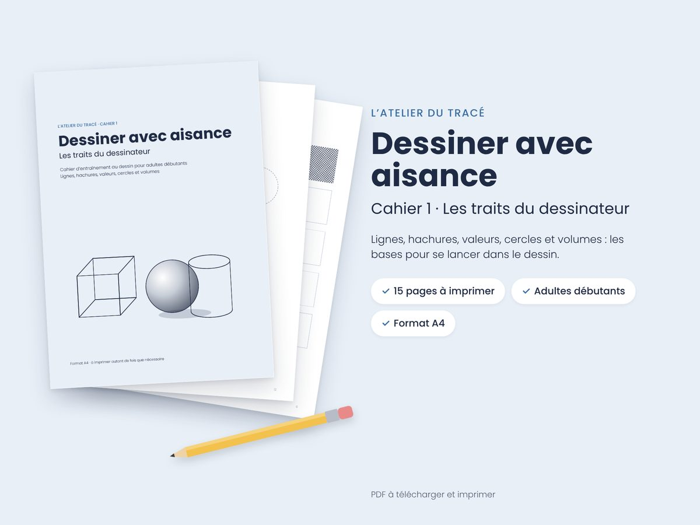
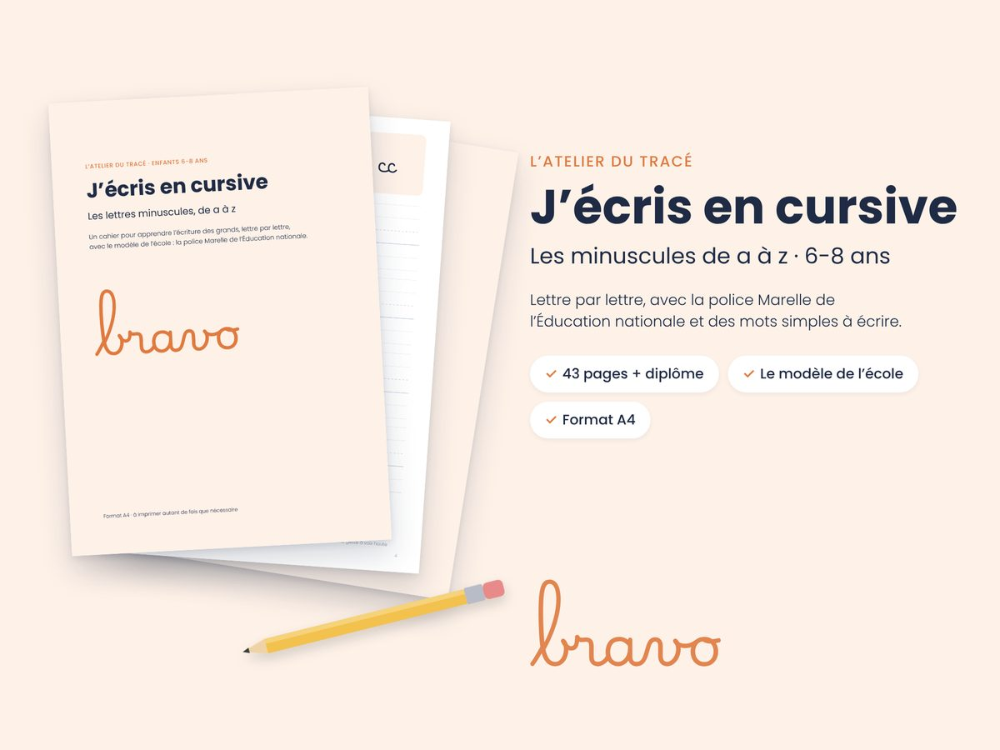

Écriture adulte
Cahier 1 · Les gestes de base
Traits, ponts, boucles : 11 exercices progressifs pour préparer la main à l’écriture.
Fiches et cahiers à imprimer
Des cahiers d’écriture et de dessin pour les adultes qui débutent ou veulent progresser, et des fiches de graphisme et de points à relier pour les enfants.

Avant d’écrire
La bonne prise et la bonne posture changent tout : moins de fatigue, une écriture plus fluide. Le guide en images, pour les droitiers et les gauchers.
Traits, ponts, boucles : 11 exercices progressifs pour préparer la main à l’écriture.
Une page par lettre de a à z, avec des mots du quotidien, sur le modèle cursif français.

Les 26 majuscules cursives, puis la date, l’adresse, la liste, le petit mot, le formulaire et la signature.

Lignes, hachures, valeurs, cercles, puis cube, sphère et cylindre : les bases pour se lancer.

Une tasse, une pomme, une maison, un chat : 10 objets du quotidien construits en 4 étapes.

10 fiches illustrées pour préparer la main à l’écriture : pluie, vagues, ponts, boucles. Diplôme inclus.

Les 26 minuscules avec le modèle de l’école (police Marelle), des mots simples, des révisions et un diplôme.

19 fiches de 1 à 10 jusqu’à 1 à 50, puis l’alphabet en majuscules et en minuscules. Solutions incluses.

10 fiches de Noël pour compter de 1 à 30 et réviser l’alphabet. Dessins originaux, solutions incluses.

Des gestes de base aux majuscules : 96 pages pour apprendre ou retrouver l’écriture cursive.

Graphisme, points à relier et Noël : 39 fiches pour les 3 à 6 ans, solutions incluses.

Les 3 cahiers d’écriture et le cahier de dessin : 111 pages pour écrire et dessiner avec aisance.
Vous préférez l’anglais ? Tous nos cahiers existent aussi en version anglaise, avec la cursive américaine, sous le nom The Tracing Studio. Voir la version anglaise →
Gratuit
Sept pages extraites de chaque collection : écriture, dessin, graphisme et points à relier.

Notre méthode
Repères de départ, copie, écriture de mémoire et révisions régulières : nos cahiers appliquent ce que la recherche et l’Éducation nationale recommandent pour apprendre à écrire.

Ici, on apprend en traçant. Chaque fiche est conçue avec soin : des consignes simples, une progression douce et des illustrations originales. Les cahiers pour adultes utilisent le modèle d’écriture cursive enseigné en France, pour que les lettres apprises soient celles que tout le monde lit au quotidien.
Une question ou une idée de cahier ? Écrivez-moi, je réponds à chaque message.
Après le paiement sur Payhip, vous recevez un e-mail avec un lien de téléchargement. Le fichier est un PDF que vous gardez.
Oui, autant de fois que vous voulez pour votre usage personnel, familial ou pour votre classe.
Une imprimante, du papier A4 et un crayon. Pour l’écriture, un crayon à papier ou un stylo qui glisse bien est idéal.
Non. Ce sont des supports d’entraînement. En cas de difficulté importante, un orthophoniste, un graphothérapeute ou un formateur en alphabétisation reste la bonne personne à consulter.